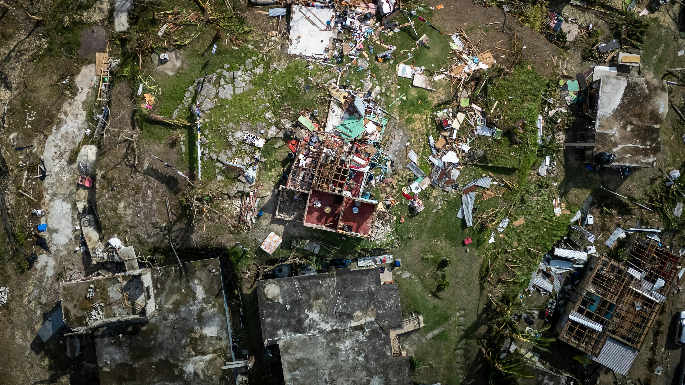
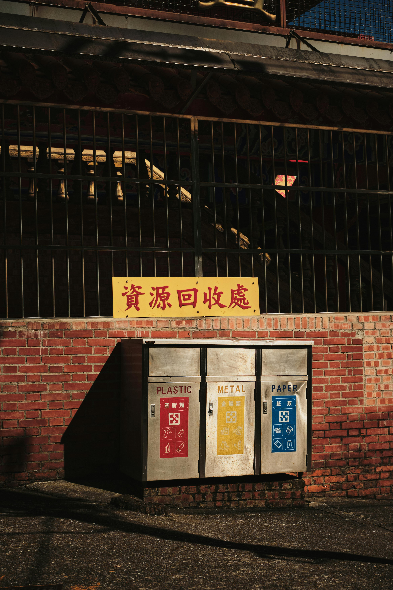

Prevenciones
La evolución de los datos referentes al calentamiento del planeta no parecen estar mejorando a la velocidad a la que sería necesario para lograr revertir la situación.

P ara evitar el cambio climático es importante realizar cambios en nuestros hábitos diarios y reducir las emisiones de gases de efecto invernadero. Naciones Unidas recomienda utilizar medios de transporte sostenibles como caminar, usar bicicleta o transporte público, además de limitar el uso de vehículos privados y preferir opciones eléctricas o viajes en tren en lugar de avión.
También es fundamental ahorrar energía, ya que gran parte de la electricidad aún se produce con combustibles fósiles. Algunas acciones sencillas son apagar los aparatos que no se usan, desconectar cargadores, utilizar bombillas LED, electrodomésticos de bajo consumo y reducir el uso de calefacción o aire acondicionado.
La alimentación también tiene un gran impacto en el medio ambiente. Consumir menos carne y productos lácteos, evitar desperdiciar comida y preferir alimentos de origen vegetal ayuda a disminuir el consumo de agua, energía y la producción de gases contaminantes.
La regla de las 3R
